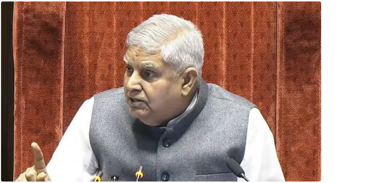

Shocking case: Rajya Sabha Chairman Jagdeep Dhankhar reacts to recovery of cash from Delhi HC judge residence
Published on: March 25, 2025
A shocking case of cash recovery at a Delhi High Court judge's residence has raised concerns about judicial accountability.
Congress MP Jairam Ramesh raised the issue during the morning session, seeking the Chair's response on judicial accountability and reminding him of a pending notice regarding the impeachment of a judge from the Allahabad High Court.
He also pointed out that earlier, 50 members of Parliament had submitted a notice to the chairman regarding certain remarks that were made by a judge of the Allahabad High Court. Ramesh said the chairman himself has repeatedly spoken about the urgency for judicial accountability. The senior Congress member also sought to remind Dhankhar that he had directed the Leader of the House on this issue.
“I request that you please make some observations on this and give necessary directions to the government to come up with a proposal for increasing judicial accountability,” he added. On the issue related to the alleged recovery of cash, Dhankhar said what “bothers” him is that the incident happened but did not come to light immediately.